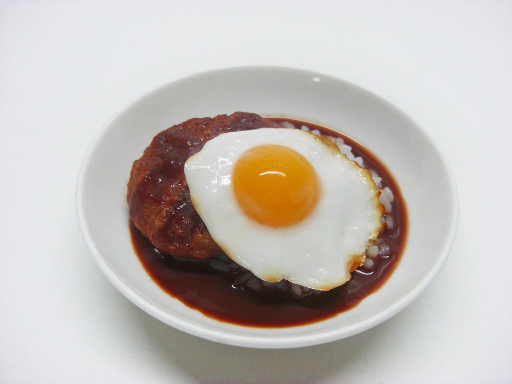

Aux delices naturelles
Resto-Afrik
Accueil
Crevettes sautés aux frites de pommes
Ce plat de crevette est d une specialité des peuples de la côte du cameroun

Ingredient
crevettes
tomate: 30gram
oignons: 20gram
pomme: 120gram
Preparation
Création du fichier squelette.html
Après avoir
reprendra la structure
peut utiliser un chemin absolu ou relatif